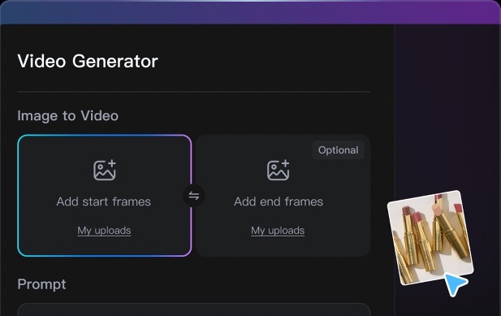
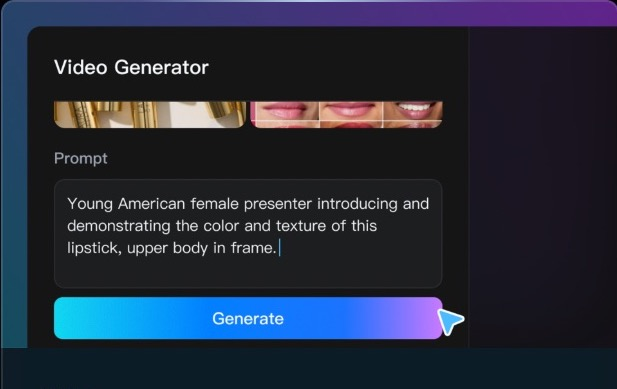
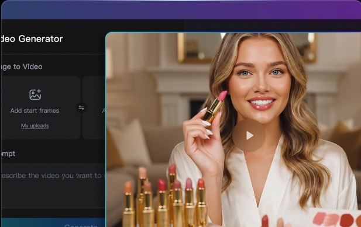

【主标题第一行】 【主标题第二行】
【用一到两句话说明页面提供的核心价值，以及用户可以获得什么结果】
【功能宣传模块标题】
【功能宣传模块说明：这里概括产品能够提供的核心功能、使用价值或转化结果】
【功能标题1】
【功能说明占位：这里描述该功能如何帮助用户完成任务、解决问题或提升广告电商效果】
【功能标题2】
【功能说明占位：这里描述该功能如何帮助用户完成任务、解决问题或提升广告电商效果】
【功能标题3】
【功能说明占位：这里描述该功能如何帮助用户完成任务、解决问题或提升广告电商效果】
【功能标题4】
【功能说明占位：这里描述该功能如何帮助用户完成任务、解决问题或提升广告电商效果】
【功能标题5】
【功能说明占位：这里描述该功能如何帮助用户完成任务、解决问题或提升广告电商效果】
【功能标题6】
【功能说明占位：这里描述该功能如何帮助用户完成任务、解决问题或提升广告电商效果】
Turn Product Ideas into Ad Videos in Three Steps
From product details to polished ad creative, turn your campaign idea into a ready-to-share video in three simple steps.

STEP 01
Add Your Product
Upload product images or video references and describe the offer, audience, or visual direction you want to promote.

STEP 02
Shape the Ad Concept
Turn your inputs into a clear hook, script, shot plan, and visual style designed for your campaign.

STEP 03
Review and Publish
Generate the video, refine the details, and export a polished ad ready for your storefront, social feed, or paid campaign.
Multiple AI Models
Explore Video Models
Top AI Models Powering Wizstar’s Ad Creation
Wizstar brings four AI video models into one workflow, so you can match each brief with the kind of motion, continuity, and shot length it needs.
Seedance 2.0
Stable audiovisual storytelling
Choose it for connected scenes that need reliable visual continuity, synchronized sound, and a smooth narrative flow.
Seedance 2.5
Longer multi-reference shots
Choose it for a single shot up to 30 seconds when several visual references need to stay connected in one directed sequence.
MiniMax H3
High-resolution cinematic control
Choose it for visually rich scenes that benefit from expressive character motion, detailed subjects, and polished high-resolution output.
Kling 3.0 Omni
Realistic motion and physics
Choose it to bring product shots, characters, and image references to life with grounded movement and believable physical detail.
Questions and Answers
What product materials do I need to make an e-commerce ad video?
You can start with a product image, video, or audio reference, together with a clear description of the product, offer, audience, or creative direction you want to communicate.
Can I create both vertical and horizontal ads for the same product?
Yes. The creation controls include 9:16 and 16:9 output options, so you can prepare the same product concept for vertical and widescreen placements.
Where can I use the generated video?
The output can be used in e-commerce listings, social content, and paid advertising placements that support the selected video format. The template does not publish campaigns directly to an ad platform.
Can I create multiple ad versions for the same product?
Yes. Create separate versions by changing the prompt, reference materials, model, aspect ratio, or resolution while keeping the same product brief.
Can I replace the ad copy, product images, and video materials later?
Yes. The template is designed for replaceable text, images, and videos. Its fixed layout, visual system, and interactions stay the same when you update those materials.
Can I use different visual directions for different product categories?
Yes. Describe the desired style, audience, product angle, and campaign direction in the prompt, and provide references when a specific visual direction matters.
How can I keep the product and brand details consistent?
Use clear product references and repeat the important brand, product, and offer details in the prompt. The result can vary by generation, so review the output before publishing.
Can I use ad performance data to improve the next version?
Yes, but the template does not connect directly to campaign analytics. You can use your external performance results to revise the prompt, references, or creative direction and then create another version.
Create Product Ads That Get Clicks—and Sales
Turn your product details into scroll-stopping ad videos that capture attention and inspire action.
Create Your Ad
What Wizstar Creators Say
Production perspectives on planning connected scenes, sound, and revisions with an AI video agent.
We turned one product shoot into a full week of ad variations, testing new hooks and formats without booking another production day.
Emma L. · E-commerce Growth LeadThe product stays consistent across every scene, so our paid-social team can move from concept to launch much faster.
Marcus T. · Performance Marketing ManagerIt is easy to create separate versions for different audiences while keeping the same offer, branding, and call to action.
Sophia R. · DTC Brand DirectorOur creative testing cycle is noticeably shorter. We can see which opening and product angle works before scaling spend.
Daniel K. · Paid Media SpecialistFrom a rough brief to polished vertical ads, the workflow gives our small team the output of a much larger creative department.
Olivia P. · Marketplace Marketing LeadWe turned one product shoot into a full week of ad variations, testing new hooks and formats without booking another production day.
Emma L. · E-commerce Growth LeadThe product stays consistent across every scene, so our paid-social team can move from concept to launch much faster.
Marcus T. · Performance Marketing ManagerIt is easy to create separate versions for different audiences while keeping the same offer, branding, and call to action.
Sophia R. · DTC Brand DirectorOur creative testing cycle is noticeably shorter. We can see which opening and product angle works before scaling spend.
Daniel K. · Paid Media SpecialistFrom a rough brief to polished vertical ads, the workflow gives our small team the output of a much larger creative department.
Olivia P. · Marketplace Marketing Lead